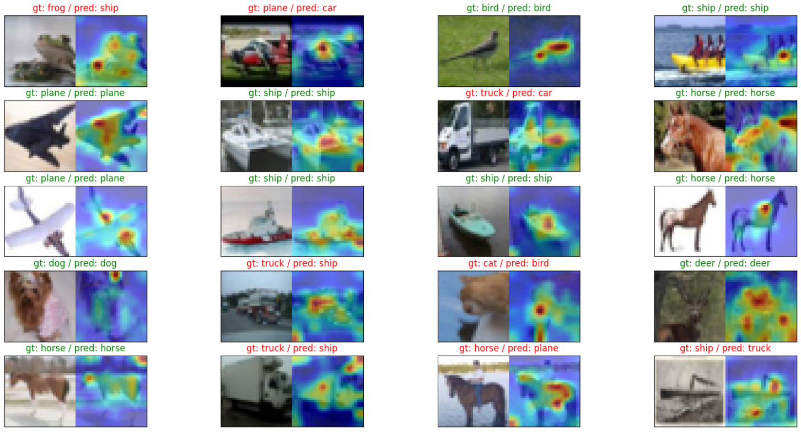
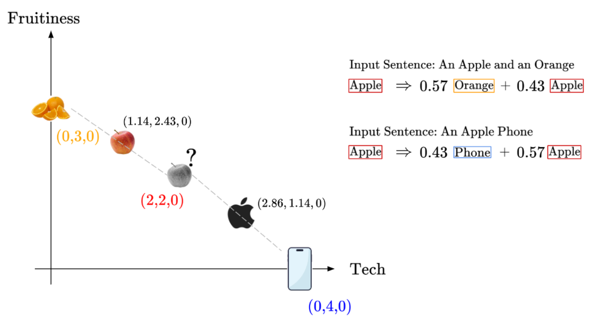
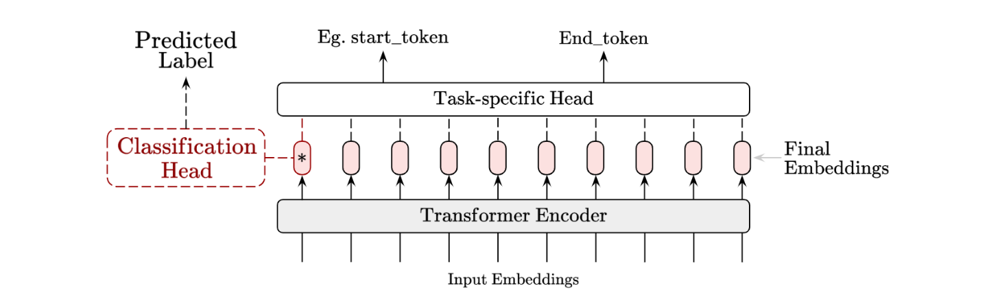
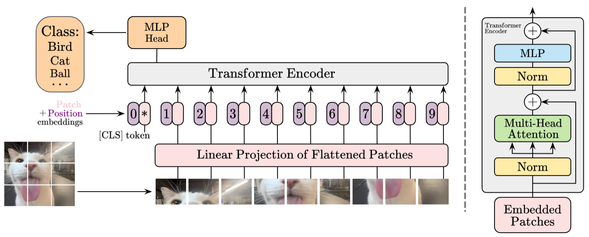
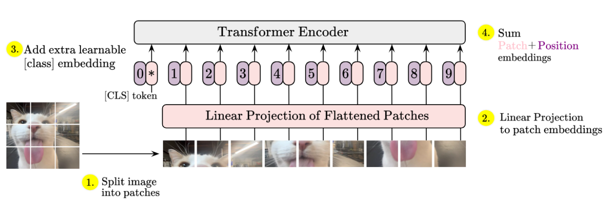

Project notes
Building a Vision Transformer (ViT) from Scratch
In this project, I build a Vision Transformer for image classification.
In this project, I build a Vision Transformer for image classification.
Published
08 March 2025
In this project, we’re going to implement a Vision Transformer (ViT) for image classification on the CIFAR-10 image dataset.
Given that we’ve laid the theoretical foundation for the attention mechanism before, this will be more of a code-along post, with some theory guiding us along the way.
I trained the ViT on a 10-class image-classification task for only 50 epochs and achieved 64% test accuracy. That is about six times better than random guessing, but still nowhere near a state-of-the-art CNN. ViTs usually take hundreds to thousands of training epochs and a large amount of data to perform at their best, so this project is mainly a learning exercise and a simple, unoptimized demonstration.
Really quickly, though, here’s a cool visualization of how our ViT learns to compute attention over the images:

We’ll see how this is implemented in the following sections.
1. Quick Recap on How Self-Attention Works
In the Self-Attention mechanism, we represent words as vectors in an embedding space. By considering the context of other words, a machine-learning model can learn better word embeddings and improve its performance on NLP tasks.
To consider the context of other words, we compare the embedding vectors and calculate their similarity scores. In the embedding space, similar tokens share similar locations, so token vectors that are close together will have a higher similarity score.
As we pass word embeddings through self-attention in Transformer encoder blocks, the position of each embedding vector is updated to better reflect the meaning of its token in context, based on the other relevant words in the same sentence.
Recall this diagram from the previous Self-Attention project:

The initial embedding for the token “Apple” is the same for each possible interpretation of “Apple”, whether it refers to a fruit or a technology brand. By passing the tokens through attention encoder blocks, the “Apple” token is pushed towards its context-based meaning. The encoder with attention layers can therefore add contextual meaning to embeddings.
Usually, Transformer-based architectures contain several encoder blocks. Each encoder block consists of normalization layers, multi-head attention layers, and a multilayer perceptron (MLP) component.
Each encoder block encodes more information into the embeddings by taking context into account, producing a deeper semantic representation of each token. At the end of this process, we get optimized and improved embeddings.
To transform these information-rich embeddings into useful predictions, we need a final set of layers, usually called the “head”. Different heads are used for different tasks, such as classification, question answering, and Named Entity Recognition (NER).

The Vision Transformer works similarly, but rather than taking word tokens as input, the ViT takes image patches. Aside from that, the overall Transformer architecture remains very similar for the ViT.
Next, we’ll overview the ViT architecture and make sense of its core components.
2. Overview of the Vision Transformer Architecture
This is the overall Vision Transformer architecture:

The Vision Transformer (ViT) is inspired by Transformer architectures used in NLP, particularly BERT, an encoder-only Transformer model.
The key idea behind ViT is to represent an image as a sequence of smaller, non-overlapping image patches. These patches are treated as input tokens, similar to words in NLP. Their embeddings are then processed by a Transformer, enabling the network to capture spatial relationships and patterns across the entire image.
Looking at the overall diagram, we can break the ViT into the following series of components and steps:
- Transform input images into embeddings
- Pass the embeddings through the Transformer Encoder
- Perform image classification with the CLS token
Next, we will cover the relevant theory for each portion while implementing the model in code as we go along.
3. Code-along Each Portion of the ViT
The changes introduced by the ViT are mostly limited to the first few processing steps, so most of the accompanying theoretical explanation will focus on Section 3.1 below.
3.1 Transform Input Images into Embeddings
We need to take an input image and first process it into a set of patch embeddings.
Some might ask: why not go more granular and feed the pixel values of the image directly into the model? Self-attention requires comparing every input token with every other token in order to learn context. If we process a small $32 \times 32$ image at the pixel level, we would have $32^2 = 1{,}024$ individual pixel tokens. Since self-attention has quadratic complexity, each token attends to every other token, resulting in $1{,}024^2 = 1{,}048{,}576$ attention computations per layer. That is only for a single attention layer in a multi-layer Transformer, making pixel-level processing computationally impractical.
Instead, we partition the image into patches and treat each patch as a token. These patches are embedded into a lower-dimensional representation, significantly reducing the number of tokens while still capturing meaningful spatial information before further processing.
Here is a high-level overview of the steps we need to take:

- Split the image into non-overlapping image patches.
- Embed patches into lower-dimensional embeddings through a linear projection.
- Prepend a trainable class embedding to the set of patch embeddings.
- Sum the patch embeddings with learned positional embeddings.
After these steps, the patch embeddings are processed like token embeddings in a typical Transformer. Let’s cover each sub-step in more detail.